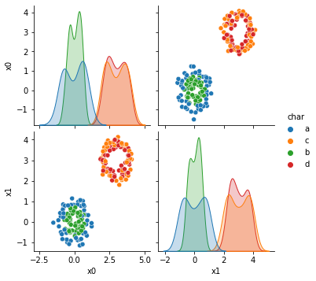
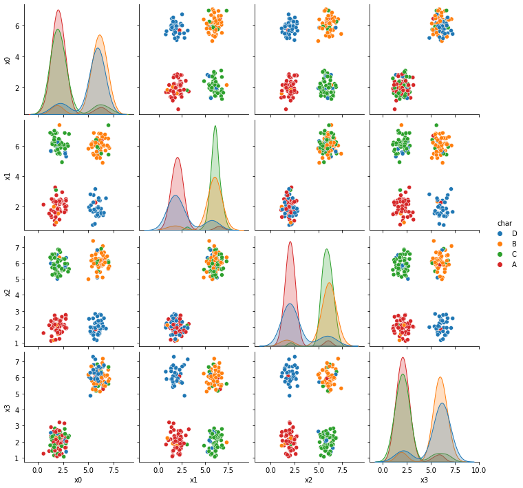
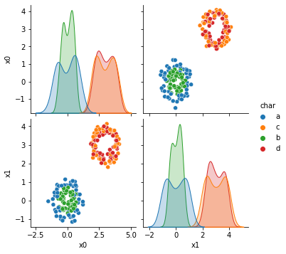
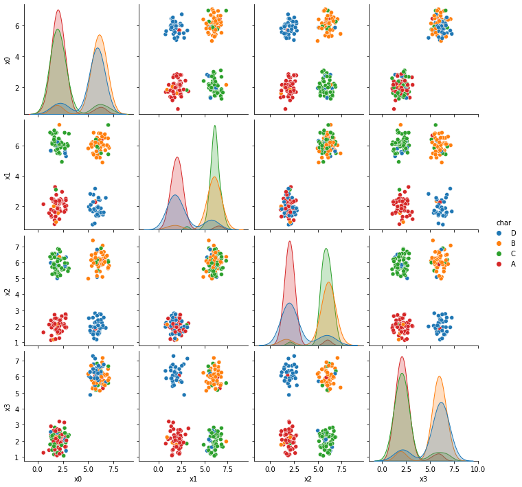

Class 19: Decision Trees¶
log onto Prismia
say hello in the zoom chat
# %load http://drsmb.co/310
import pandas as pd
import seaborn as sns
from sklearn.model_selection import train_test_split
from sklearn.tree import DecisionTreeClassifier
from sklearn.datasets import load_iris
from sklearn import tree
First we’ll review the datasets from the assignment briefly. More details on them will be on the solutions repo.
a6_data = 'https://raw.githubusercontent.com/rhodyprog4ds/06-naive-bayes/main/data/dataset'
data_urls = [a6_data + str(i) +'.csv' for i in range(1,7)]
# read in only the columns with actual data
[sns.pairplot(data =pd.read_csv(url,usecols=lambda c: not('Unnamed' in c)), hue='char') for url in data_urls]
[<seaborn.axisgrid.PairGrid at 0x7f5ff881f550>,
<seaborn.axisgrid.PairGrid at 0x7f5ff84f5150>,
<seaborn.axisgrid.PairGrid at 0x7f5fecbb35d0>,
<seaborn.axisgrid.PairGrid at 0x7f5febbbfc90>,
<seaborn.axisgrid.PairGrid at 0x7f5feba02410>,
<seaborn.axisgrid.PairGrid at 0x7f5feabeb890>]
 




Now we’re looking at dataset 6 more deeply.
df6= pd.read_csv(data_urls[-1],usecols=[1,2,3])
df6.head()
| x0 | x1 | char | |
|---|---|---|---|
| 0 | 6.14 | 2.10 | B |
| 1 | 2.22 | 2.39 | A |
| 2 | 2.27 | 5.44 | B |
| 3 | 1.03 | 3.19 | A |
| 4 | 2.25 | 1.71 | A |
This one Naive Bayes does poorly on, even though the classes are separable because each class is not defined by a single region. Since each class has two noncontinuous resions.
dt = DecisionTreeClassifier()
X_train, X_test, y_train, y_test = train_test_split(df6.values[:,:2],df6.values[:,2])
y_train
array(['B', 'B', 'B', 'A', 'B', 'A', 'B', 'A', 'A', 'B', 'B', 'A', 'A',
'A', 'B', 'A', 'B', 'B', 'A', 'B', 'B', 'B', 'B', 'B', 'A', 'B',
'B', 'B', 'B', 'B', 'B', 'B', 'B', 'B', 'A', 'A', 'B', 'A', 'B',
'B', 'B', 'B', 'A', 'B', 'A', 'B', 'A', 'B', 'B', 'B', 'A', 'A',
'B', 'A', 'B', 'A', 'B', 'B', 'B', 'B', 'B', 'A', 'A', 'A', 'A',
'B', 'A', 'A', 'B', 'B', 'B', 'A', 'A', 'A', 'B', 'A', 'A', 'B',
'A', 'B', 'A', 'A', 'A', 'A', 'A', 'A', 'A', 'A', 'A', 'B', 'B',
'B', 'B', 'A', 'A', 'B', 'B', 'B', 'A', 'A', 'A', 'A', 'A', 'A',
'A', 'B', 'A', 'B', 'A', 'A', 'B', 'B', 'A', 'B', 'B', 'A', 'A',
'B', 'B', 'A', 'A', 'A', 'B', 'A', 'B', 'B', 'A', 'B', 'B', 'B',
'A', 'B', 'B', 'B', 'B', 'B', 'A', 'A', 'A', 'A', 'A', 'A', 'A',
'A', 'B', 'B', 'B', 'A', 'A', 'A'], dtype=object)
dt.fit(X_train,y_train)
DecisionTreeClassifier()
tree.plot_tree(dt)
[Text(96.00882352941177, 201.90857142857143, 'X[1] <= 1.58\ngini = 0.5\nsamples = 150\nvalue = [73, 77]'),
Text(39.38823529411765, 170.84571428571428, 'X[0] <= 3.83\ngini = 0.32\nsamples = 15\nvalue = [3, 12]'),
Text(19.694117647058825, 139.78285714285715, 'gini = 0.0\nsamples = 3\nvalue = [3, 0]'),
Text(59.082352941176474, 139.78285714285715, 'gini = 0.0\nsamples = 12\nvalue = [0, 12]'),
Text(152.62941176470588, 170.84571428571428, 'X[1] <= 1.94\ngini = 0.499\nsamples = 135\nvalue = [70, 65]'),
Text(98.47058823529412, 139.78285714285715, 'X[0] <= 4.275\ngini = 0.337\nsamples = 14\nvalue = [11, 3]'),
Text(78.7764705882353, 108.72, 'gini = 0.0\nsamples = 11\nvalue = [11, 0]'),
Text(118.16470588235295, 108.72, 'gini = 0.0\nsamples = 3\nvalue = [0, 3]'),
Text(206.78823529411767, 139.78285714285715, 'X[0] <= 1.86\ngini = 0.5\nsamples = 121\nvalue = [59, 62]'),
Text(157.5529411764706, 108.72, 'X[1] <= 3.98\ngini = 0.417\nsamples = 27\nvalue = [8, 19]'),
Text(137.85882352941178, 77.65714285714284, 'gini = 0.0\nsamples = 8\nvalue = [8, 0]'),
Text(177.24705882352941, 77.65714285714284, 'gini = 0.0\nsamples = 19\nvalue = [0, 19]'),
Text(256.02352941176474, 108.72, 'X[1] <= 2.955\ngini = 0.496\nsamples = 94\nvalue = [51, 43]'),
Text(216.63529411764708, 77.65714285714284, 'X[0] <= 4.01\ngini = 0.464\nsamples = 41\nvalue = [15, 26]'),
Text(196.94117647058823, 46.59428571428572, 'gini = 0.0\nsamples = 15\nvalue = [15, 0]'),
Text(236.3294117647059, 46.59428571428572, 'gini = 0.0\nsamples = 26\nvalue = [0, 26]'),
Text(295.4117647058824, 77.65714285714284, 'X[0] <= 4.095\ngini = 0.436\nsamples = 53\nvalue = [36, 17]'),
Text(275.71764705882356, 46.59428571428572, 'X[1] <= 4.065\ngini = 0.188\nsamples = 19\nvalue = [2, 17]'),
Text(256.02352941176474, 15.531428571428563, 'gini = 0.0\nsamples = 2\nvalue = [2, 0]'),
Text(295.4117647058824, 15.531428571428563, 'gini = 0.0\nsamples = 17\nvalue = [0, 17]'),
Text(315.1058823529412, 46.59428571428572, 'gini = 0.0\nsamples = 34\nvalue = [34, 0]')]
print(tree.export_text(dt))
|--- feature_1 <= 1.58
| |--- feature_0 <= 3.83
| | |--- class: A
| |--- feature_0 > 3.83
| | |--- class: B
|--- feature_1 > 1.58
| |--- feature_1 <= 1.94
| | |--- feature_0 <= 4.27
| | | |--- class: A
| | |--- feature_0 > 4.27
| | | |--- class: B
| |--- feature_1 > 1.94
| | |--- feature_0 <= 1.86
| | | |--- feature_1 <= 3.98
| | | | |--- class: A
| | | |--- feature_1 > 3.98
| | | | |--- class: B
| | |--- feature_0 > 1.86
| | | |--- feature_1 <= 2.96
| | | | |--- feature_0 <= 4.01
| | | | | |--- class: A
| | | | |--- feature_0 > 4.01
| | | | | |--- class: B
| | | |--- feature_1 > 2.96
| | | | |--- feature_0 <= 4.10
| | | | | |--- feature_1 <= 4.07
| | | | | | |--- class: A
| | | | | |--- feature_1 > 4.07
| | | | | | |--- class: B
| | | | |--- feature_0 > 4.10
| | | | | |--- class: A
dt.score(X_test,y_test)
1.0
dt.get_depth()
6
dt2 = DecisionTreeClassifier(max_depth=2)
dt2.fit(X_train, y_train,)
DecisionTreeClassifier(max_depth=2)
dt2.score(X_test,y_test)
0.5
print(tree.export_text(dt2))
|--- feature_1 <= 1.58
| |--- feature_0 <= 3.83
| | |--- class: A
| |--- feature_0 > 3.83
| | |--- class: B
|--- feature_1 > 1.58
| |--- feature_1 <= 1.94
| | |--- class: A
| |--- feature_1 > 1.94
| | |--- class: B
dt2.score(X_train,y_train)
0.5866666666666667